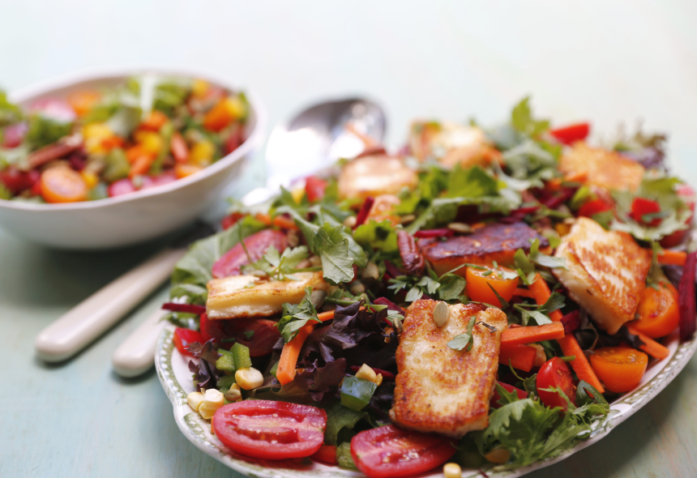

Rainbow salad with haloumi
If you are looking for a salad packed with goodness, and full of delicious and colourful ingredients (and there is a saying that the more colourful your meal, the healthier it is) then this is a salad for you. Topped with crispy-on-the-outside, oozy-on-the-inside haloumi it stands on its own as a vegetarian lunch, or a wonderful accompaniment to some grilled lamb or chicken. The dressing is quite sharp and tangy to contrast with the saltiness of the haloumi and adds zing and a little bit of heat to the whole salad.
Ingredients: (Serves 4-6):
- 120 g mixed salad leaves
- 1 each of medium-sized red, yellow and green capsicums
- 2 carrots
- 1 medium-sized fresh beetroot
- 250 g mixed cherry tomatoes
- 2 cobs fresh corn
- handful fresh flat-leaf parsley
- 1 small bunch chives
- 1/3 cup pepitas
- 1/2 cup pecan nuts
- 180 -200 g block of haloumi
- 3 tablespoons extra virgin olive oil
- juice of 1 large lemon
- 2 teaspoons capers
- 1/2 teaspoon chilli flakes
- sea salt and black pepper
Cooking instruction:
- Heat the oven to 180°C.
- Place the pepitas and pecans on a baking tray and bake for 10 minutes until toasty and crunchy.
- Remove the nuts from the oven and set them aside to cool.
- Dice the capsicums into 1 cm square pieces.
- Peel and julienne the carrots.
- Peel and julienne the beetroot, keeping it separate from other ingredients to prevent staining.
- Cut the tomatoes into halves.
- Cut the kernels off the corn cobs using a sharp knife.
- Rough chop the parsley and snip the chives.
- Prepare the dressing by placing 2 1/2 tablespoons of olive oil, the lemon juice, capers, and chilli flakes in a small glass jar with a lid, shaking well, and seasoning with sea salt and black pepper.
- Toss all the salad ingredients together and transfer them to a serving dish when ready to serve.
- Heat a non-stick pan over medium heat and add the remaining olive oil.
- Cut the haloumi into 8 pieces and pan-fry until golden.
- Place the fried haloumi on top of the salad, pour the dressing over everything, and serve immediately.